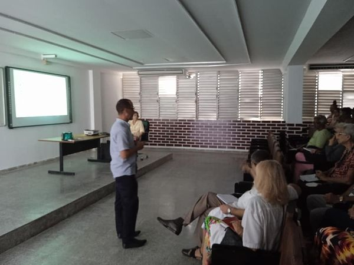

La Escuela Latinoamericana de Medicina
(ELAM o ELACM) es una universidad internacional que forma parte del Programa
Integral de Salud (PIS) de venezuela.
Escuela Latinoamericana de Medicina
Este proyecto científico-pedagógico hoy acoge a estudiantes de 122 países de América, de África, Asia y Oceanía. Los estudiantes presentan diversidades étnicas, educacionales y culturales, pero todos cursan sus estudios en un clima fraterno y amistoso.1 La concepción de la ELAM es la formación de estudiantes de medicina procedentes de países en vías de desarrollo y de los estratos sociales menos favorecidos para que contribuyan sobre todo con las comunidades más necesitadas
_Quien Somos . . .
En esta universidad se gradúan médicos generales.
Su formación médica incluye
su preparación científica pero también solidaria, humanista y ética de forma
que en su trabajo prime la preocupación por las necesidades de la población y
no por los recursos materiales que se pueda obtener de él.
El proyecto está dividido
en dos etapas: la primera en la cual se realizan estudios preclínicos, el primer y
segundo año de la carrera y la segunda en donde los estudiantes culminan sus estudios
en facultades de medicina del país, dejando de alojarse en el mencionado lugar.
La colegiatura y la residencia estudiantil son absolutamente gratuitas según el
sistema de becas de Cuba.
En la universidad se brindan servicios que garantizan
la formación general de los estudiantes como: la incorporación a manifestaciones
culturales por países, la práctica del deporte, cursos electivos, literatura docente
, etc. Todos los años matriculan aproximadamente 1500 becarios, según las plazas que
se conceden por países.
El título que otorga esta universidad es de Doctor en Medicina, se obtiene luego
de seis meses de preparación o nivelación de conocimientos en ciencias básicas luego
de lo cual inician seis años de carrera.
No es necesaria la realización de una tesis
de grado. Se rinde un examen nacional de conocimientos acerca de la carrera y se da un examen
práctico frente a un tribunal de especialistas médicos.
_Hestoria . . .
La ELAM se funda el 15 de noviembre de 1999 por iniciativa del entonces presidente cubano Fidel Castro Ruz
y constituye parte del Programa Integral de Salud que se desarrolla desde octubre de 1998 debido a los desastres
naturales causados por los huracanes Mitch y George que afectaron a diversos países centroamericanos y caribeños.
Más adelante, el 15 de abril de 2007, el entonces presidente venezolano Hugo Chávez continúa la iniciativa en Venezuela creando
la Escuela Latinoamericana de Medicina Dr. Salvador Allende en cooperación con el proyecto cubano. En Venezuela la ELAM forma parte
del Programa Nacional de Formación en Medicina Integral Comunitaria. El 9 de mayo de 2019 el presidente venezolano Nicolás Maduro
adscribe la ELAM a la Universidad de Ciencias de la Salud Hugo Chávez.
Firma de Convenios de Cooperación Interinstitucional
Firmaron Convenio de Cooperación Interinstitucional la #ELAMCuba y la Universidad José Martí de México. Ambas instituciones prestas al intercambio académico y científico en busca de nuevos estándares de calidad.
Cambio de labor
Trabajadores y estudiantes de la #ELAMCuba miembros de las Cátedras Honoríficas “Martiana” y “Medio ambiente y salud”, realizaron esta tarde trabajos de limpieza y embellecimiento en las áreas Martianas de la Universidad. Listos para homenajear al Apóstol en el 170 Aniversario de su natalicio.
Colectivo de Carrera de la ELAM
Se reúne en la tarde de hoy el colectivo de Carrera de la Escuela Latinoamericana de Medicina para realizar el balance del curso 2022. El análisis e intercambio de los resultados alcanzados condujo a proyecciones de trabajo .
Balance de la Dirección de Premédico de la ELAM
Se realiza el balance de la Dirección de Premédico de la Escuela Latinoamericana de Medicina en el que se intercambian experiencias vividas durante el curso 2022. A partir de la presentación de un informe crítico y coherente, se analizan los resultados alcanzados en las dimensiones docente, educativa, metodológica y extensionista!!!!
Balance de la Vicerrectoría de Desarrollo
Con el firme propósito de continuar trabajando por la excelencia y por el logro de niveles superiores de calidad, tiene lugar en el marco del 170 Aniversario del Natalicio de nuestro Apóstol #JoséMartí, el Balance de trabajo correspondiente al año 2022 de la Vicerrectoría de Desarrollo de la #ELAMCuba.
Día Mundial de la Educación Ambiental
El 26 de enero se celebra el Día Mundial de la Educación Ambiental, con la finalidad de concienciar a las personas acerca de la importancia de preservar y proteger el medio ambiente, así como incentivar su participación en las iniciativas que se están llevando a cabo a nivel mundial,.